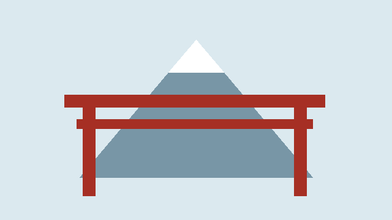

Viaje a Tokio
Publicado el
Preparativos
Para nuestro emocionante viaje a Tokio, comenzamos a planificar con anticipación. Compramos nuestros boletos de avión, hicimos reservas en un hotel céntrico y decidimos las atracciones que queríamos visitar.
Explorando Tokio
Durante nuestra estadía en Tokio, exploramos la ciudad a fondo. Visitamos el Palacio Imperial, disfrutamos de la comida callejera en Shibuya, y experimentamos la vida nocturna en Shinjuku. También tuvimos la oportunidad de sumergirnos en la cultura japonesa al visitar templos antiguos y participar en ceremonias del té.
